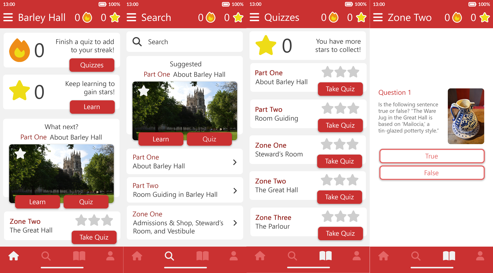

Why?
This project was created for the Developing Interactive Media module at the University of York.
Time Trial is a UX/UI design project for a mobile F1 application. It allows motorsport fans to track various motorsport championships of their own choosing, allowing them to view upcoming sessions on their personalised home screen and receive alerts when a session is about to start. They can also view information relating to the track, session results, session times, and where they can watch. This application aims to remove the monotonous process of finding session times, converting time zones, and scheduling.

This project was created for the Developing Interactive Media module at the University of York.
The prototype was built using Figma, with wireframes created in Balsamiq. A detailed logbook was also created for the design process.
This project earned a 1st class grade (70%).